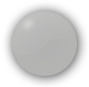

Part 1: Compatible Test
Please locate the these keys on your keyboard. These are keys you will use for this part of the module.

Instructions: For this part of the module, you will either press the "F" key using your left index finger or the "J" key using your right index finger as fast as you can once the indicator turns from white to green. Once the key press has been detected, the indicator will turn from green to red to indicate a response has been made.
Part 2: Incompatible Test
Please locate the these keys on your keyboard. These are keys you will use for this part of the module.
Instructions: For this part of the module, you will either press the "F" key using your left index finger or the "J" key using your right index finger as fast as you can once the indicator on the
opposite side turns from white to green. Once the key press has been detected, the indicator will turn from green to red to indicate a response has been made.